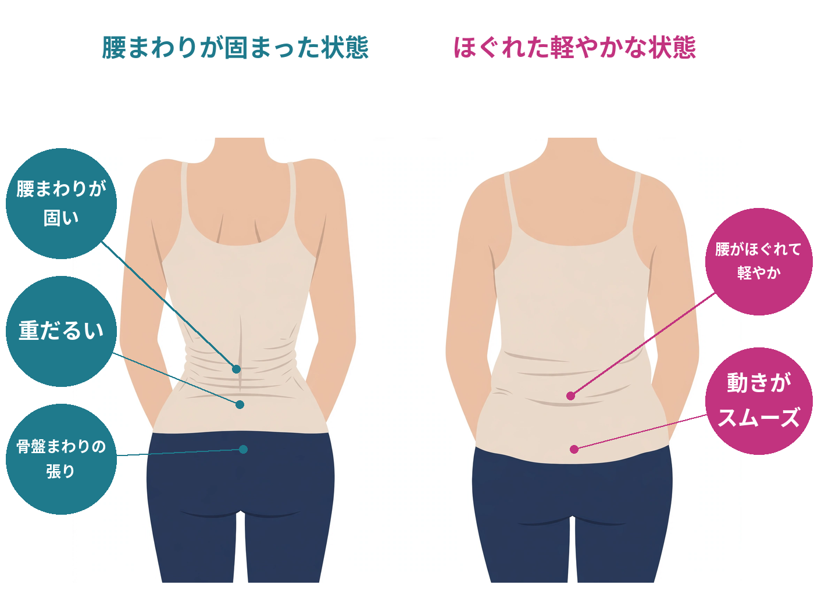

慢性腰痛・重だるさ
美容整体ステラ・ポラリス東三国｜大阪市淀川区東三国・東三国駅徒歩5分・女性向け

痛くない骨盤矯正。腰の重さを取って歩き姿を美しく
腰の重だるさは、長時間同じ姿勢でいることや、骨盤まわりの筋肉のバランスの崩れ、冷えなどが重なって感じやすくなると言われています。腰そのものだけでなく、お尻や太もも、背中の筋肉の状態も腰の感覚と関わります。痛みというほどではないけれど、夕方になると腰が重い、立ち上がるときに伸ばしたくなる、という状態が続くと、歩き姿勢にも影響が出てきます。このページでは、腰の重だるさの背景にある仕組みと、腰まわりが軽く感じられる状態を目指す当サロンでのケア、ご自宅でできるセルフケアをご案内します。まずは下のチェックで、ご自身の状態を確かめてみてください。
ご予約はこちら（Coubic）こんなお悩みありませんか
- 夕方になると腰が重だるく、伸ばしたくなる
- 長時間座ったあと、立ち上がるときに腰が固まった感じがする
- 朝起きたとき、腰まわりが重く感じる日が多い
- 歩く姿勢が崩れている気がする
- お尻や太ももまで、重さが広がる感じがする
- マッサージを受けても、数日で元の重さに戻ってしまう
- 体が冷えると、腰の重さが強くなる気がする
当てはまる項目が多いほど、腰まわりの筋肉の疲れやバランスの崩れが積み重なっている目安とされています。腰の重さは腰だけの問題ではなく、お尻・太もも・背中を含めた全体の状態と関わっています。次のセルフチェックで、今の腰の動きの傾向を確かめてみましょう。
簡単セルフチェック（前屈・後屈チェック）
立ったままできる、腰の動きの傾向を知るための簡単な方法です。
- まっすぐ立ち、ゆっくり前屈して、腰や背中のつっぱり感を確認します。
- 次に、両手を腰に当てて、ゆっくり後ろへ反らします。
- 前屈と後屈でつっぱる場所が偏っている、左右で感覚が違う場合は、腰まわりの筋肉のバランスに偏りがある目安と言われています。痛みがある場合は無理をしないでください。
※これは診断ではありません。ご自身の状態の傾向を知る目安としてお使いください。
慢性腰痛・重だるさの原因と仕組み
同じ姿勢と筋肉の疲れ
腰は、上半身の重さを支えながら体を動かす要の部位です。デスクワークや立ち仕事で同じ姿勢が続くと、腰まわりの筋肉は同じ状態で働き続け、疲れがたまりやすくなります。夕方に重だるく感じるのは、その日の疲れの積み重ねが表れているサインとも言えます。図1のように、腰の重さは腰だけでなく、骨盤・お尻・太もも・背中を含めた全体のバランスとつながっています。

図1 腰の重だるさで起こりやすい変化と、バランスが整った姿勢のイメージ。姿勢の状態には個人差があります。
骨盤まわりのバランス
骨盤は腰の土台です。骨盤の傾きや左右のバランスが崩れると、腰まわりの筋肉にかかる負担にも偏りが出やすくなります。反り腰や猫背といった姿勢のクセは、そのまま腰の負担の偏りにつながるため、腰のケアでは骨盤を含めた土台を見ることが大切です。土台が整うと、腰まわりの筋肉は無理のない働き方を取り戻しやすくなります。
お尻・太もも・背中とのつながり
腰の感覚は、腰の筋肉だけで決まるものではありません。お尻の筋肉が使いにくいと腰が代わりに頑張り、太ももの張りが強いと骨盤の動きが制限され、背中の緊張は腰まで波及します。腰が重いと感じるときほど、周りの部位を含めてゆるめることが、腰まわりの軽さへの近道になります。
冷えと巡りの影響
腰まわりは冷えやすい部位でもあります。冷房や冬の冷えで筋肉がこわばると、巡りが滞り、重だるさの感覚が強まりやすいと言われています。冷えると重くなる自覚がある方は、温めるケアを取り入れるだけでも感覚が変わることがあります。巡りのよい、温かい状態を保つことは、腰のケアの基本です。
セルフケアで足りる場合・サロンケアが向く場合
重さが軽く、温めたりストレッチをしたりしたあとに腰が軽く感じる日が多い場合は、まずご自宅でのセルフケアを続けて様子を見る方法があります。一方で、腰まわりが自分ではゆるめにくい、ほぐしても数日で戻ってしまう、骨盤を含めた姿勢のバランスから整えたいという場合は、サロンでのケアが向いている目安になります。サロンでは、バキバキと音を鳴らすような強い手技ではなく、痛みのない範囲で骨盤まわりを整えることで、施術後に「腰が軽くなった」「歩きやすい」と感じやすい状態を目指します。どちらが正解というものではなく、今の状態に合わせて選ぶことが大切です。
当サロンでのケア
当サロンの腰まわりケアは、「骨盤の土台を整え、腰まわりが軽く感じられる状態」を目指す組み立てです。全身のバランスを確認しながら、部位と目的に合わせて3つの手技を組み合わせます。
美容整体：痛みのない範囲で骨盤まわりを整える手技を行い、腰に負担のかかりにくい姿勢の土台をつくることを目的に進めます。
アロマオイルマッサージ：腰・お尻・太ももをオイルで丁寧にゆるめ、巡りが流れやすい状態を目指します。香りに包まれるリラックス感の高いケアです。
もみほぐし：腰まわりや背中の張りやすい筋肉をほぐし、重だるさの背景になりやすい緊張をゆるめることを目的に進めます。
ケアを通して目指すのは、こんな変化です。
- 腰まわりが軽くなり、立ち上がりがスムーズな感覚へ
- 歩くときの足運びが軽やかになり、歩き姿が美しく見える印象へ
- お尻や太ももまでゆるんで、下半身全体が軽く感じられる状態へ
- 姿勢の土台が整って、夕方の重だるさを感じにくい状態へ
- 体が温まり、巡りがよくなったような体感へ
施術後は腰まわりが軽くなったような感覚や、歩くときの足運びの変化を目指します。お仕事帰りに立ち寄りやすい夜の時間帯も営業しています。施術の前後で腰の動きを一緒に確認し、ご自宅で続けやすい温め方や姿勢のポイントもご案内します。

施術の流れ
ご来店後、気になる部位やお悩み、ご希望の強さなどをうかがいます。完全個室のため、周りを気にせずお話しいただけます。
骨盤の傾きや腰の動き、姿勢の状態などを一緒に確認し、その日の状態に合わせた施術の進め方をご案内します。
美容整体を中心に、ご希望に応じてアロマオイルマッサージ、もみほぐしを組み合わせて進めます。強さは途中でも調整できます。
施術後の状態を確認し、ご自宅で続けやすいセルフケアのポイントをお伝えします。次回の目安についても、ご希望があればご案内します。
料金
| コース | 通常価格 | キャンペーン価格（12/25まで） |
|---|---|---|
| 80分 | ― | 3,000円 |
| 100分 | 10,000円 | 4,000円 |
| 120分 | ― | 5,000円 |
クリスマスキャンペーンは12月25日まで、ご新規様もリピーターの方も対象です。施術内容は当日の状態とご希望に合わせて組み立てます。
ご自宅でできるセルフケア
- 腰を温める：蒸しタオルやカイロで腰まわりを温めます。冷えを感じる日はとくに、入浴で体全体を温めることを意識してください。
- お尻のストレッチ：椅子に座って片足を反対の膝に乗せ、体を前に倒します。左右それぞれ20〜30秒、1日1〜2回が目安です。
- 骨盤ゆらし体操：仰向けで膝を立て、骨盤を前後にゆっくりゆらします。朝起きたときと夜寝る前に各10回ほど行うと、腰まわりがほぐれやすくなります。
- 座り姿勢の見直し：長時間座るときは、1時間に一度立ち上がって軽く体を伸ばします。クッションで腰を支える工夫も取り入れてみてください。
ご自宅でのケアに：セルフケア資料ライブラリ（無料）
このお悩みに合わせたセルフケアの考え方を、無料の資料ライブラリでご紹介しています。
セルフケア資料ライブラリを開く →
受診の目安
足のしびれや力が入りにくい、安静にしても痛みが強くなる場合は、施術の前に医療機関への受診をおすすめします。また、転倒などのあとに痛みが出た場合や、発熱を伴う場合も、医療機関でご相談ください。
よくある質問
Q. 初めてでも大丈夫ですか？
はい。当サロンは完全予約制・完全個室で、1日3組までのご案内です。最初にカウンセリングで腰の状態や気になる部位をうかがい、無理のない内容から始めます。施術の前後で腰の動きを確認しながら「腰が軽くなった」「歩きやすい」といった感覚の違いを一緒に確かめますので、初めての方も安心してご利用いただけます。
Q. 施術は痛いですか？
強さは、ご希望をうかがいながら調整します。バキバキと音を鳴らすような強い手技は行わず、痛みのない範囲で丁寧に進めることを大切にしています。感じ方には個人差がありますので、施術中も遠慮なくお声がけください。
Q. コースはどう選べばいいですか？
80分・100分・120分のコースがあり、ケアしたい部位の広さやお時間のご都合に合わせて選べます。腰のケアで腰まわりからお尻、太もも、背中までゆっくり整えたい方には、100分が選ばれることが多いコースです。迷われる場合は、ご予約の際にお気軽にご相談ください。
Q. 場所と予約方法を教えてください。
大阪市淀川区東三国、東三国駅から徒歩5分です。完全予約制のため、予約サイト（Coubic）またはLINE公式アカウントからご予約をお願いしています。
Q. 男性も受けられますか？
当サロンは女性向けのため、男性の方は、同じ東三国の男性専用整体院「北辰堂」をご案内しています。
施術者について
平賀建人（施術歴30年）
鍼灸師・登録販売者・アロマセラピスト・パーソナルトレーナーの資格を持ち、美容整体を中心に、アロマオイルマッサージ、もみほぐしを、その日の状態とご希望に合わせて組み合わせて施術します。このページの内容は、施術者の知識と経験をもとに作成しています。

料金・ご予約
ご新規様もリピーターの方も 12/25まで
80分 3,000円／100分 4,000円／120分 5,000円
通常価格は100分10,000円です。施術内容はご希望に合わせて組み立てます。
営業時間：月〜土 17:00〜23:00／日 10:00〜23:00（完全予約制）｜電話：080-2468-3086
大阪府大阪市淀川区東三国2丁目25番4号101（東三国駅徒歩5分）